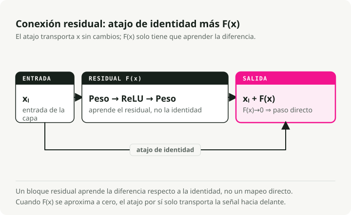
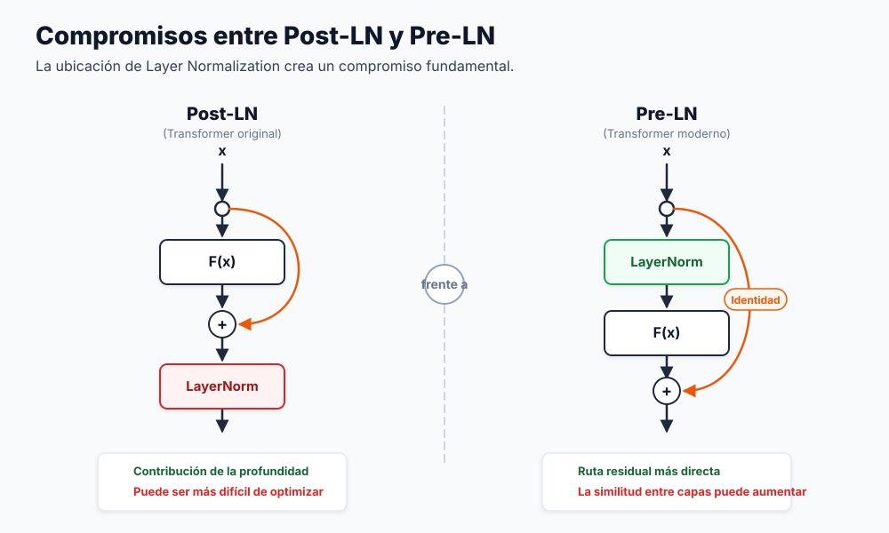
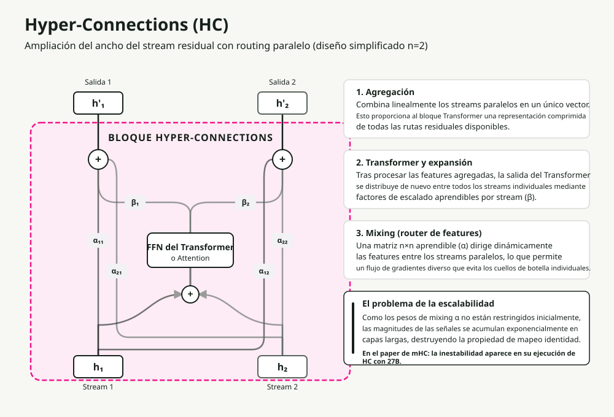
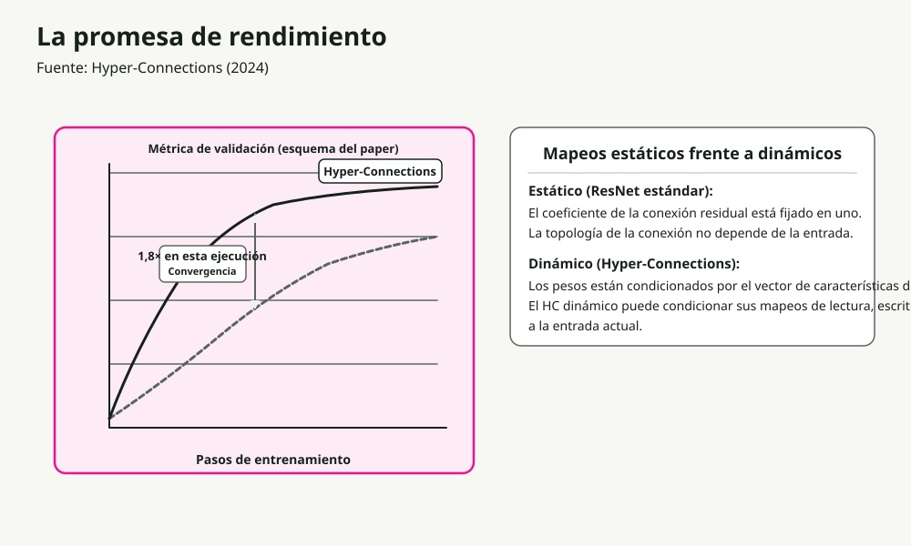
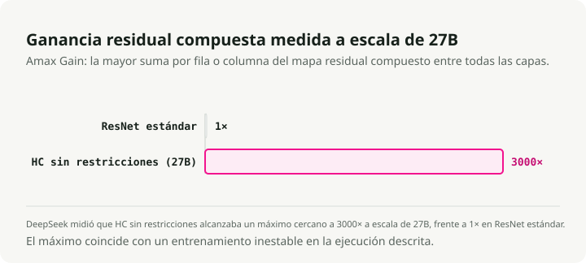
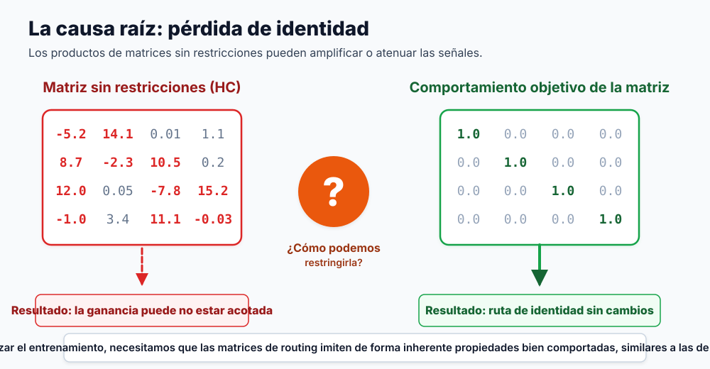
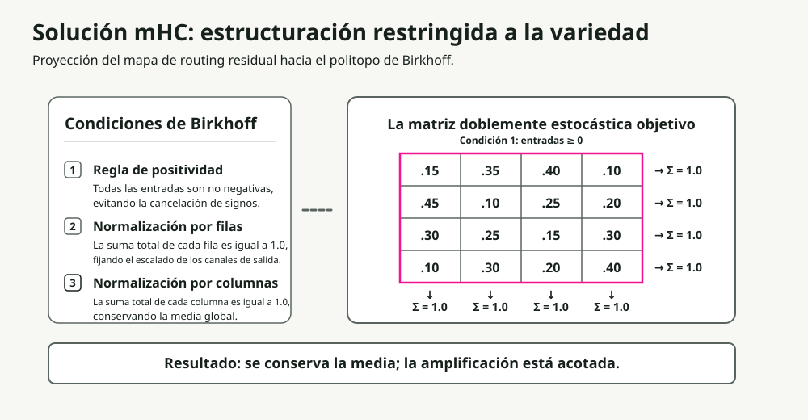
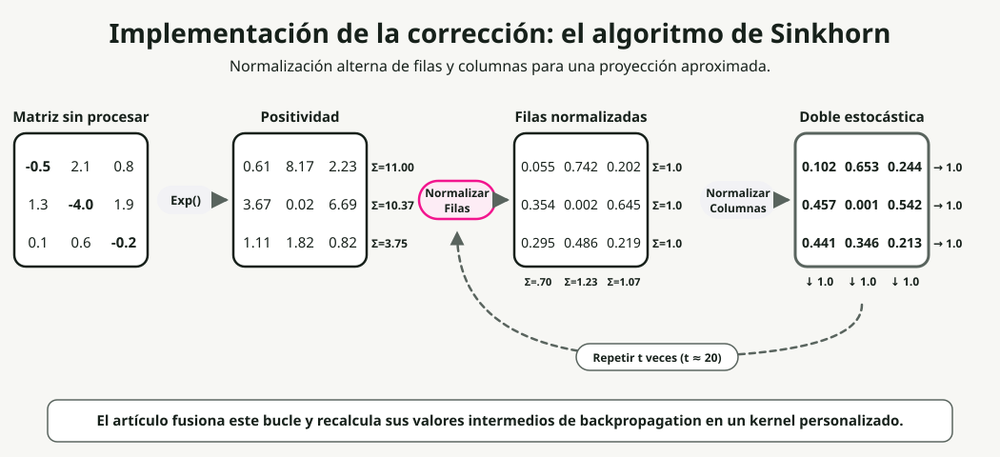
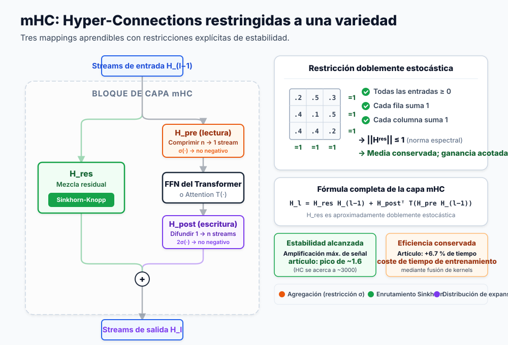

Traducción automática
Este artículo se tradujo automáticamente a partir de la versión original en inglés.
Conexiones hiperconstruidas con restricciones de variedad (mHC): Explicación de la escala residual de DeepSeek
El aprendizaje profundo moderno se basa en las conexiones residuales. Tras una década de profundizar en la capas, los investigadores de DeepSeek plantearon una pregunta diferente: ¿qué pasaría si escaláramos el ancho en su lugar? Su respuesta es Conexiones hiperbólicas restringidas por variedad (mHC), soluciona un problema de estabilidad de larga data relacionado con la escala de ancho.
En esta publicación, explicaré la evolución desde los residuos básicos hasta el mHC, detallando por qué cada paso fue necesario y cómo funciona en la práctica la solución de DeepSeek a gran escala.**
TL;DR: Las conexiones hiperestables expanden los flujos residuales en múltiples corrientes paralelas para lograr una convergencia más rápida, pero rompen la asignación de identidades que mantiene estable el entrenamiento. mHC restablece la estabilidad al restringir las matrices de mezcla al Polítopo de Birkhoff (matrices estocásticas dobles) mediante el algoritmo diferenciable Sinkhorn-Knopp. Resultado: 4 flujos paralelos con solo un sobrecoste de entrenamiento del 6,7%.
Por qué funcionan las conexiones residuales
Antes de analizar qué corrige mHC, debemos entender sobre qué se basa.
El problema de la profundidad
Apilar más capas debería aumentar la capacidad de un modelo. En la práctica, las redes muy profundas resultan más difíciles de entrenar. La capacidad está presente; lo que falla es la optimización basada en gradientes: estos desaparecen (disminuyendo hasta casi cero) o explotan (creciendo sin límite) a medida que se propagan a través de muchas capas.
La solución residual
El Artículo de ResNet Se introdujo una solución elegante. En lugar de aprender una asignación directa, se aprende el residual, es decir, la diferencia con respecto a la función identidad:

El truco radica en el atajo de identidad. Cuando la función residual F(x) devuelve cero, la capa funciona como un paso directo sin ninguna transformación. De esto se derivan dos consecuencias:
- Autopista de gradientes: Los gradientes fluyen directamente a través del atajo, evitando así su desvanecimiento.
- Optimización sencilla: Si la identidad es la solución óptima, la red simplemente aprende que F(x) → 0.
Este único cambio arquitectónico permitió que las redes con cientos de capas fueran entrenables.
La complicación en los Transformers: ubicación de la normalización por capas
Los Transformers introdujeron una nueva variable: dónde colocar la normalización por capas (Layer Normalization, LN). A primera vista, la decisión parece menor, pero no lo es.

| Variante | Colocación de LN | Ventaja | Limitación clave |
|---|---|---|---|
| Post-LN | Después del bloque residual | Alta capacidad del modelo | Desaparición del gradiente: la función LN en la ruta principal reescala los gradientes en cada capa |
| Pre-LN | Antes del bloque residual | Excelente estabilidad. | Colapso de la representación: las características se vuelven similares a lo largo de las capas |
El ResiDual La arquitectura intentó resolver este problema mediante rutas residuales duales: una Pre-LN para garantizar estabilidad y otra Post-LN para mejorar la capacidad. Sin embargo, sigue tratándose de un único flujo residual. ¿Qué pasaría si pudiéramos contar con múltiples flujos en paralelo?
Hyper-Connections: La revolución en el ancho de banda
Conexiones hiperdimensionales (CH) Tomó una ruta diferente. No basta con añadir profundidad; hay que ampliar la amplitud del flujo residual.

¿Qué es un “stream”?
En los transformadores estándar, las incrustaciones de tokens de entrada forman un único vector de \(d\) dimensiones que representa las características del token. Esta secuencia de vectores única constituye el “stream residual” que pasa por cada bloque.
En Hyper-Connections, un stream es una de las \(n\) instanciaciones paralelas de este estado.
¿Cómo se obtienen? Al inicio de la red, la incrustación de entrada inicial se replica \(n\) veces (donde \(n\) es la “tasa de expansión”, típicamente 4). El estado oculto estándar de \(d\) dimensiones se convierte en una “matriz oculta híbrida” de tamaño \(n \times d\).
Estos \(n\) streams idénticos pasan por las capas de transformador de la red, donde son agregados, enrutados y expandidos de manera diferente mediante los mecanismos descritos a continuación. Por lo tanto, divergen de inmediato y capturan rutas de representación distintas.
Mecanismos clave
En lugar de un único camino residual, HC mantiene \(n\) streams paralelos que fluyen a través de toda la red. En cada bloque de transformador, se ejecutan tres operaciones, cada una controlada por pequeños pesos aprendibles:
- Agrupación (\(H_{pre}\), mapeo previo): Las \(n\) corrientes de entrada se comprimen en un único vector para el bloque del transformador, mediante el uso de una matriz aprendible \(H_{pre}\). Cada corriente se multiplica por un peso de importancia aprendible, lo que funciona como un filtro de entrada.
- Expansión (\(H_{post}\), mapeo posterior): Tras el bloque principal del transformador (Atención o MLP), su salida se distribuye en \(n\) corrientes separadas mediante una matriz aprendible \(H_{post}\). Actúa como una puerta de salida, donde cada corriente se escala con un peso aprendible único.
- Mezcla (enrutamiento entre corrientes): Las corrientes recién expandidas se fusionan con las corrientes residuales originales. Una matriz “enrutadora de características” aprendible de tamaño \(n \times n\) (\(\mathbf{H}^{res}\)) determina cómo la información de cada corriente se transfiere a las demás, permitiendo la interacción de características antes de pasar a la capa siguiente.
La matriz de mezcla \(H\) funciona como un controlador de tráfico: enruta las características entre las corrientes según patrones aprendidos. De este modo, el flujo de información es mucho más rico que si se utilizara únicamente un camino residual.
Los resultados

HC converge aproximadamente 1,8 veces más rápido que los residuos estándar. Las secuencias paralelas proporcionan a los gradientes más vías posibles y permiten que la red mantenga representaciones más diversas.
El problema
Existe un problema crítico: HC es inestable a gran escala.
Por qué se rompen las hiper-conexiones
La flexibilidad que impulsa a HC es también lo que lo hace fallar. Destruye la mapeo de identidades que permite entrenar los residuos en primer lugar.

La matemática de la inestabilidad
En los residuos estándar:
Cuando \(F(x) \rightarrow 0\), se trata de una identidad matemática: \(x_{l+1} = x_l\). La señal pasa sin sufrir cambios.
En Hyper-Connections, la ruta residual incluye una multiplicación por matriz:
A lo largo de L capas, la señal adquiere la siguiente forma:
Si los valores de H se desvían aunque sea ligeramente de 1.0, este producto puede:
- Explosionar: los valores mayores que 1.0 se multiplican exponencialmente.
- Desaparecer: los valores menores que 1.0 disminuyen exponencialmente.
El equipo de DeepSeek midió esto mediante el parámetro “Amax Gain Magnitude”, que registra la relación máxima entre la magnitud de la señal de salida y la de entrada en todas las capas. En los modelos HC estándar, este valor alcanza ~3000 en redes profundas. En ese punto, el entrenamiento deja de ser viable.

El problema fundamental: las matrices sin restricciones pueden adoptar cualquier valor (números negativos, magnitudes grandes, cualquier cosa). Necesitamos una forma de mantenerlas dentro del conjunto de “comportamiento adecuado”, donde conserven la energía de la señal de la misma manera que lo hace la matriz identidad.
La solución mHC: Restricciones geométricas
La idea clave de mHC es que se puede lograr un enrutamiento flexible y estabilidad si se restringen las matrices de mezcla a una estructura matemática específica: el Poliedro de Birkhoff, que es el conjunto de todas las matrices doblemente estocásticas, donde la suma de cada fila y columna es 1 y todos los elementos son no negativos.

Las tres restricciones
mHC impone que la matriz de mezcla H^res sea doblemente estocástica: todas sus entradas son no negativas, y la suma de cada fila y columna es exactamente 1. Esto garantiza al mismo tiempo tres propiedades:
| Restricción | Regla | ¿Por qué es importante? |
|---|---|---|
| Positividad | Todos los elementos > 0 | Evita la oscilación de la señal que desestabiliza los gradientes. |
| Suma de filas = 1 | La suma de cada fila es 1.0. | Normaliza la contribución de salida; ningún flujo individual domina. |
| Suma de columnas = 1 | La suma de cada columna es 1.0. | Normaliza la distribución de entrada; todos los flujos contribuyen de manera equitativa. |
El resultado crítico es: Energía entrante = Energía saliente. La magnitud de la señal se mantiene intacta a lo largo de toda la red, lo que evita el problema de la explosión exponencial.
Esta restricción también conlleva consecuencias matemáticas útiles:
- Norma espectral ≤ 1: La norma espectral (el valor singular más grande) delimita la amplificación de la señal. Las matrices estocásticas dobles son matemáticamente no expansivas.
- Cerrado bajo la multiplicación: La composición de matrices doblemente estocásticas da como resultado otra matriz doblemente estocástica.
- Promedio ponderado: La operación se convierte en una combinación convexa (un promedio ponderado cuyos pesos suman 1) de las entradas, preservando la magnitud total de la señal.
El algoritmo Sinkhorn-Knopp
El desafío: ¿cómo se puede forzar a que una matriz aprendible sea doblemente estocástica manteniéndola diferenciable? El algoritmo Sinkhorn-Knopp es la solución. Se trata de una proyección iterativa que converge hacia una forma doblemente estocástica en tan solo unos pocos pasos.

Un recorrido con un ejemplo concreto:
Paso 1: Positividad. Aplicar la función exp() a los pesos en bruto para que todos los elementos sean estrictamente positivos:
Raw Matrix → Positive Matrix
[-0.5 2.1 0.8] [0.6 7.9 2.2] Σ=10.7
[ 1.3 -4.0 1.9] exp [3.7 0.02 6.7] Σ=10.4
[ 0.1 0.6 -0.2] → [1.1 1.8 0.8] Σ=3.7
Paso 2: Normalización de filas. Dividir cada fila entre su suma:
Positive Matrix → Row Normalized
[0.6 7.9 2.2] [0.25 0.65 0.10] Σ=1.0
[3.7 0.02 6.7] /row [0.35 0.01 0.64] Σ=1.0
[1.1 1.8 0.8] → [0.30 0.45 0.25] Σ=1.0
Σ=0.9 Σ=1.1 Σ=0.99 ← columns not yet =1
Paso 3: Normalización de columnas. Dividir cada columna entre su suma total:
Row Normalized → Doubly Stochastic
[0.25 0.65 0.10] [0.28 0.45 0.27] Σ=1.0
[0.35 0.01 0.64] /col [0.40 0.09 0.51] Σ=1.0
[0.30 0.45 0.25] → [0.32 0.46 0.22] Σ=1.0
Σ=1.0 Σ=1.0 Σ=1.0 ← converges in few iterations
Paso 4: Iterar. Repita los pasos 2-3 un máximo de t_max iteraciones (normalmente 20) hasta alcanzar la convergencia.
Todo el proceso es diferenciable, por lo que los gradientes fluyen durante el entrenamiento. Además, el algoritmo Sinkhorn-Knopp es económico en recursos, lo que genera una carga adicional mínima en el bucle de entrenamiento.
La inicialización también es importante.
Mejoras en la inicialización
Para que el entrenamiento comience de forma estable:
- Sigmoid en lugar de Tanh: Los coeficientes permanecen no negativos y dentro de un rango definido (de 0 a 1).
- Multiplicador escalar 2: Las salidas de sigmoid son aproximadamente 0,5 en la inicialización. Al multiplicar por 2 se obtiene un peso inicial de aproximadamente 1,0, lo que permite un comportamiento similar al de la función identidad.
Arquitectura completa del mHC
En conjunto:

El flujo a través de cada bloque:
- Entrada: \(n\) flujos residuales paralelos ingresan en la capa.
- Agrupación (\(H_{pre}\)): Los \(n\) flujos se combinan en un único vector mediante una suma ponderada usando la matriz \(H_{pre}\). En mHC, estos pesos de agrupación están sujeto a restricciones locales (\(\sigma(\cdot)\)) para que sean no negativos, lo que evita una escala antinatural e interferencias destructivas.
- Cálculo: El bloque estándar de Transformer (Attention o MLP) procesa el vector agregado único.
- Expansión (\(H_{post}\)): La única salida del bloque se difunde y se escala a \(n\) flujos de actualización separados mediante la matriz \(H_{post}\), la cual también está restringida a valores no negativos.
- Mezcla (enrutamiento \(H_{res}\)): Los flujos intercambian información a través de una matriz de mezcla \(n \times n\), \(\mathbf{H}^{res}\). En mHC, esta matriz está estrictamente sujeta al Poliedro de Birkhoff (estocástica doble), lo que permite conservar la energía de la señal.
- Salida: Los \(n\) flujos actualizados pasan a la siguiente capa sin explotar ni desaparecer.
La diferencia clave con respecto al HC estándar es que cada operación de mezcla y agrupación pasa por una restricción tipo Sinkhorn o una normalización similar. Esto es lo que mantiene estable la señal a lo largo de cientos de capas.
Infraestructura: Hacerlo práctico
Ampliar a \(n=4\) flujos genera un sobrecoste real. Cada flujo necesita su propia memoria, y Sinkhorn añade 20 iteraciones por capa. El equipo de DeepSeek lo solucionó mediante varias optimizaciones.
Fusión de kernels
Utilizando TileLang, fusionaron las iteraciones de Sinkhorn con multiplicaciones de precisión mixta en kernels CUDA especializados. Esto reduce los viajes hacia la memoria de alta ancho de banda (HBM), que suele ser el verdadero cuello de botella en el hardware moderno.
Recómputación selectiva
Almacenar cada estado intermedio de Sinkhorn para la retropropagación haría que la memoria se saturara. En su lugar, mHC:
- Libera las activaciones intermedias tras el paso forward.
- Las recálcula dinámicamente durante el paso backward.
Una versión modificada DualPipe El programado de las superposiciones hace que la recálculo se realice simultáneamente con la comunicación de gradientes, por lo que el costo asociado al recálculo queda en gran medida oculto.
Resultados
Gracias a estas optimizaciones, la tasa de expansión n=4 genera solo un 6,7 % de sobrecarga en el entrenamiento en comparación con el escenario base. La implementación de ruteo topológico complejo resulta viable a gran escala.
Validación empírica
¿Se traducen realmente las garantías teóricas en mejoras reales?
La dinámica de entrenamiento bruta es muy marcada. Sin restricciones, las redes profundas que utilizan conexiones hiperestándar experimentan un aumento excesivo en la magnitud de la señal (Amax Gain), llegando aproximadamente a 3.000, lo que provoca una inestabilidad masiva y picos frecuentes en la pérdida. Al aplicar la restricción estocástica dual, mHC mantiene el valor de Amax Gain cerca de 1,6 durante todo el proceso de entrenamiento.
Pero la estabilidad no importa si el rendimiento del modelo empeora. Para probar su capacidad representacional, el equipo evaluó un modelo mHC-27B (construido sobre la arquitectura DeepSeek-V3) frente a las bases de referencia estándar ResNet y HC sin restricciones. En pruebas de razonamiento como GSM8K y MATH, mHC gana de forma consistente. Las mejoras de rendimiento obtenidas mediante la gestión paralela de flujos son reales, y con las restricciones de Sinkhorn finalmente se pueden entrenar estas vías residuales muy amplias sin que el proceso de entrenamiento falle.
Compromisos y consideraciones
mHC no es una solución gratuita. Hay tres aspectos que merecen mención:
- Sobrecarga computacional: El 6,7 % es un porcentaje bajo teniendo en cuenta los beneficios que ofrece, pero sigue siendo un costo adicional en comparación con los residuos estándar.
- Complejidad de implementación: No se puede escribir este código con PyTorch puro esperando que sea rápido. La baja sobrecarga requiere núcleos CUDA personalizados y ajustados con precisión.
- Bias inductivo fuerte: La restricción doblemente estocástica impone una conservación estricta de la señal. Si tu tarea realmente necesita amplificar la señal más profundamente en la red, esta restricción actúa en contra de ti.
Conclusiones clave
- Las conexiones residuales funcionan gracias al mapeo de identidad: la capacidad de transmitir señales sin modificaciones.
- Las hiperconexiones escalan la anchura en lugar de la profundidad, lo que permite una convergencia más rápida mediante enrutamiento multistream.
- La flexibilidad de las hiperconexiones destruye el mapeo de identidad, provocando una explosión de señales en redes profundas.
- mHC restringe las matrices de mezcla al poliedro de Birkhoff, garantizando matemáticamente la estabilidad.
- Sinkhorn-Knopp hace que la restricción sea diferenciable, lo que permite el entrenamiento de extremo a extremo.
- El trabajo de infraestructura (fusión de kernels, recálculo selectivo) es lo que hace práctico todo este sistema.
Para los profesionales: si estáis alcanzando límites con la escala de profundidad y tenéis acceso al desarrollo de kernels personalizados, mHC representa un enfoque fundamentado para escalar la capacidad mediante la anchura, manteniendo al mismo tiempo la estabilidad del entrenamiento.